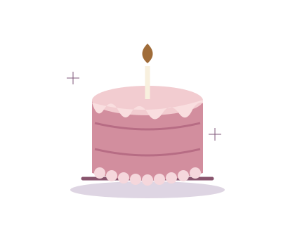
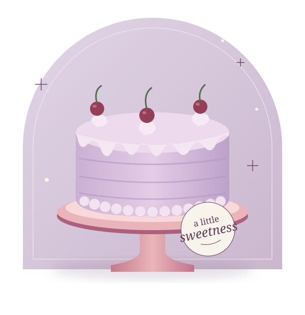
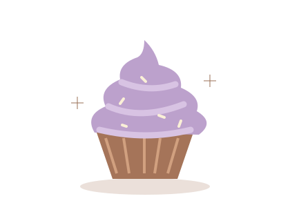
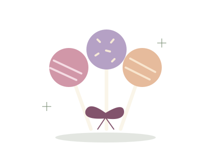

01Custom cakes
Start with your occasion and a design idea. Discuss the details directly with Anxious Cakes.
A LITTLE CAKE. A LITTLE JOY.
Custom cakes, cupcakes & cake pops.
A sweet little corner of Norfolk, Nebraska.
Anxious Cakes · Custom cake microbakery

SOMETHING SWEET
From a centerpiece cake to a bite-sized treat.
Ask the bakery about designs, flavors and availability.

01Start with your occasion and a design idea. Discuss the details directly with Anxious Cakes.

02A little celebration of their own. Ask about flavors and quantities for your gathering.

03Small treats for sweet moments. Contact the bakery to explore your ideas.
All artwork is illustrative. Designs shown are not advertised products.
HELLO FROM NORFOLK
Meet Anxious Cakes — a custom cake microbakery in Norfolk, Nebraska.
The bakery's public creator profile features custom cake decorating, cupcakes and cake pops. Its Facebook page is the place to explore the business's own updates and work.
Visit Anxious Cakes on FacebookBRING YOUR CAKE IDEA
Tell the bakery your occasion, date and guest count.
Confirm availability, pricing and any dietary needs directly.
This concept does not accept orders or payments.
Your email opens in your own mail app.